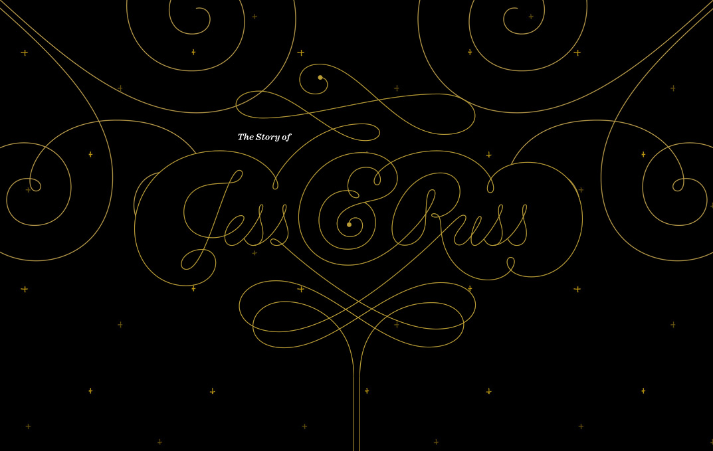
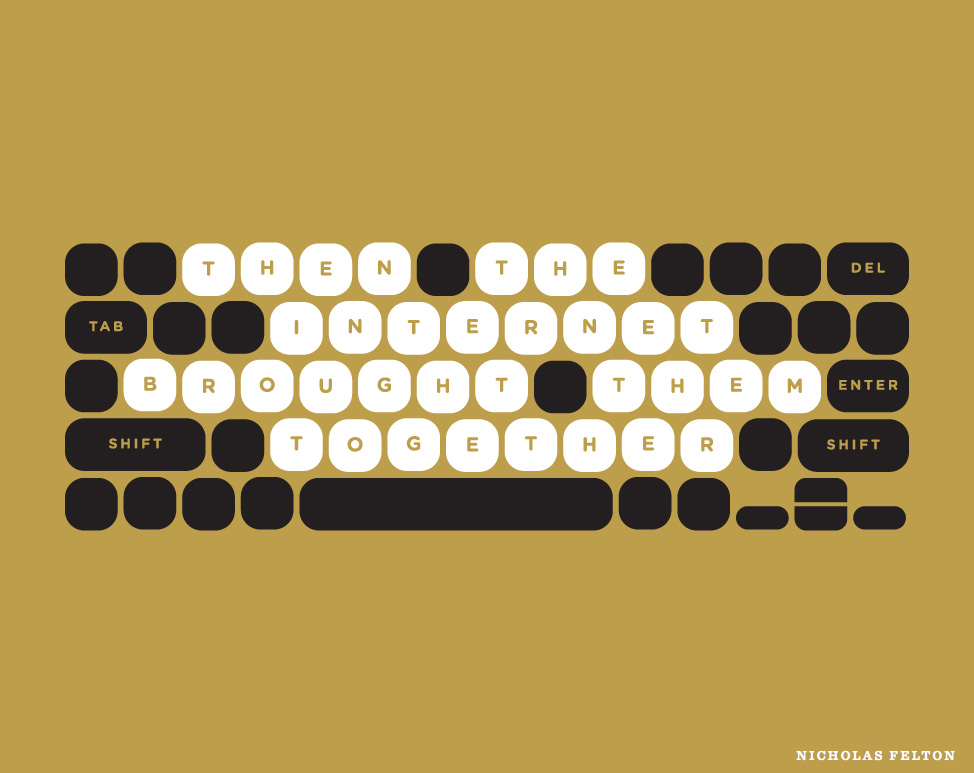
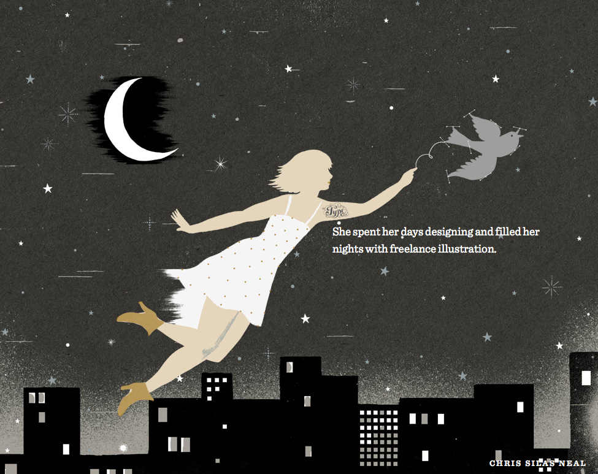
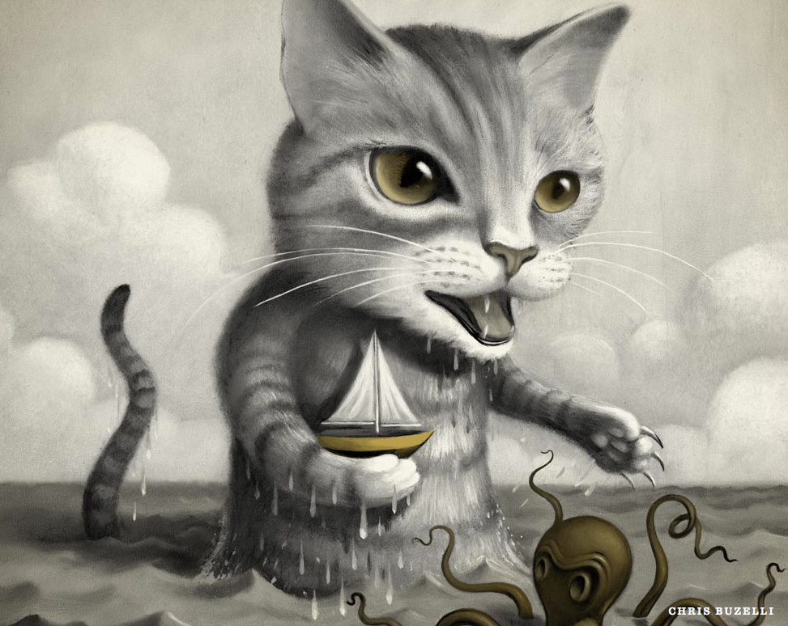
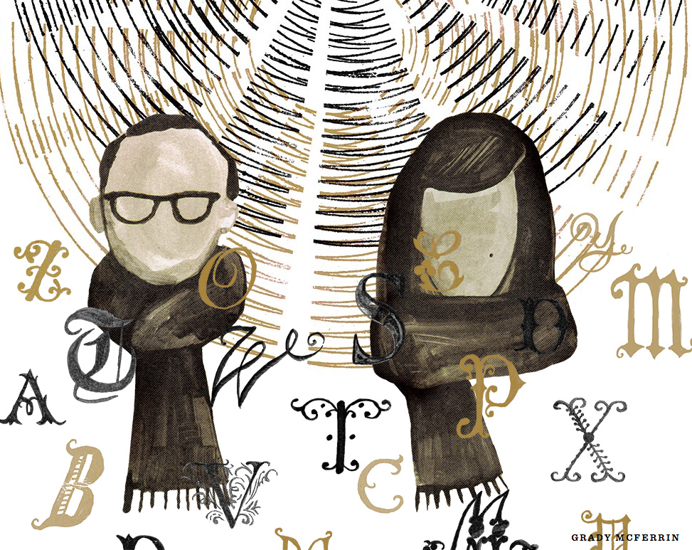
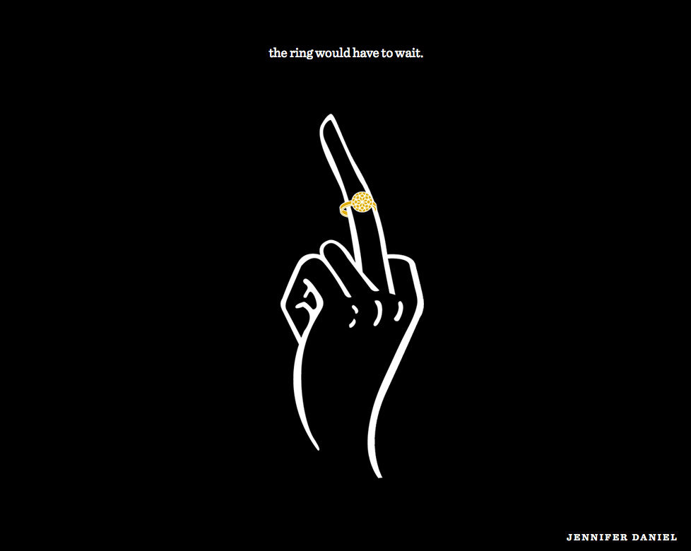

The Story of Jess & Russ
Almost four years ago, fate and a few mouse clicks brought Russ Maschmeyer and Jessica Hische together. They went from complete strangers to inseparable companions in work and love. This is how it all began.
When an interaction designer at Facebook and a popular illustrator and “avid internetter” get married, an awesome parallax scrolling website full of illustrations from friends is pretty much required.